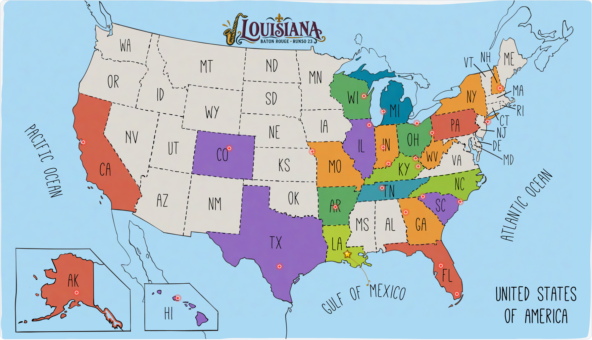
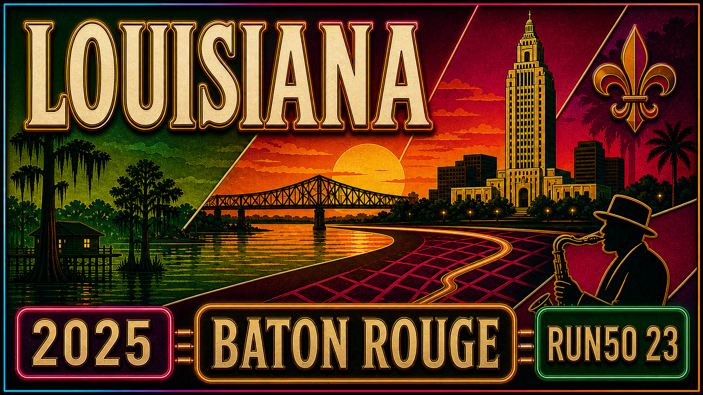

Run50 #第23州｜路易斯安那：巴吞鲁日马拉松｜法兰西底色，2025 第一跑

新年第一跑，从转机到新奥尔良，再开进巴吞鲁日，把南方湿地、LSU 紫金色和 Finish Fest 串在一起。


冬天，往南走
2025 开年，我的体重也在老妈的“日复一日投喂”里冲上了来美以来的巅峰。爸妈回国了，我也该开始锻炼，把状态拉回来。

一月的美国大地寒风凛冽，翻着地图，发现南方还有几个州没打卡。路易斯安那州首府巴吞鲁日刚好有一场马拉松，名字大气，直接叫 “Louisiana Marathon”，挺有排面。那就它了。
原本还盘算着开特斯拉长途，但没开过电车跑这么远，心里总有点没底，于是果断改飞。

行程不短：先飞达拉斯，再转机新奥尔良，最后租车一路开到巴吞鲁日。折腾是折腾了点，但开年第一跑，总得干一场。


于是，带着“减重计划”和“南方法兰西情调”的好奇心，我踏上了路易斯安那。
路易斯安那的法式底色
路易斯安那，简称 LA，但可别和加州的洛杉矶搞混。
历史课上它和拿破仑挂钩：1803 年的“路易斯安那购地案”（Louisiana Purchase），美国花 1500 万美元从法国人手里买下这片比法国本土还大的土地，美国版图直接翻了一倍。
这地方给人的印象就是：法国殖民的影子、克里奥尔和卡津文化、爵士乐、湿地沼泽，还有狂欢节和美食。
我最早知道这里，其实是因为 NBA 的黄蜂队，后来改名成“鹈鹕”，主场在新奥尔良。而“Louisiana”这个名字，和我常驻的“Louisville”还挺像的：一个是州，一个是城，读起来都带点法语腔，仿佛隔空是亲戚。
很多人一提路易斯安那，第一反应就是新奥尔良（New Orleans）：爵士乐的发源地、狂欢节的舞台，是外地人眼里的路易斯安那门面。
可真正的首府，其实在巴吞鲁日（Baton Rouge）。名字法语直译就是“红色木杆”，城不算大，却因 LSU 老虎队的橄榄球和那股法式南方味道而让人印象深刻，这里也是我们这趟旅程的终点。
从湿地到巴吞鲁日
抵达新奥尔良机场，我们先去取车。停了一排车，最后选了一辆白色的现代 Sonata，外形简洁，开起来也很稳。

肚子饿得厉害，在机场附近找了家韩式快餐 AsiFusion。我点了一份韩式猪肉饭，辣酱拌白米饭，味道扎实。就是韩国大妈老板娘没什么笑容，让人有点拘谨，但味道完全对得起这趟南方之行的“开胃菜”。

吃完继续上路，往巴吞鲁日开。最特别的是路过 庞恰特雷恩湿地。高速公路像是直接架在水面上，两边是沼泽和芦苇，偶尔还能看到小船。车子就像在水上漂，湿地风光很有冲击力。
到巴吞鲁日的时候，天色放晴。街边一栋红砖房子上画着 LSU 球员和爵士乐手的壁画，城市的气质一下就显出来了：既有校园的青春，也有音乐的底色。

我们直接开到市中心的 Expo 地点，N. 4th St. 附近，也就是旧州议会大厦不远处。入口热闹，志愿者发号码布，我的是 2110，展板上贴着赛道路线图，仪式很到位。


展馆外，就是一座白色城堡一样的建筑，旧州议会大厦。19 世纪修建的哥特风格建筑，因为外形特别，被称为“南方的城堡”。它见证过南北战争，也曾是政治中心，现在改成博物馆。阳光下，白墙和蓝天对比鲜明，很有力量感。


傍晚我们去了超市，买了樱桃、沙拉、速食面，还有一盒无奶的蛋奶饮料。提着东西回到 Airbnb，小院里的木屋安静又温馨。门口有小阳台和摇椅，挂着一些装饰。收拾好装备，Siqi 把跑鞋和参赛包摆好。赛前的准备完成，等着明天在密西西比河畔开跑。


晨光里，跑进 LSU
第二天一大早，天还没完全亮，我们就走向了马拉松的起点。Louisiana Marathon 的起终点设在巴吞鲁日市中心的 North Boulevard Town Square，两边是高楼林立的政府办公区，广场搭起拱门，人群已经聚在一起。


这场马拉松被称为“南方最有风情的赛道之一”，路线穿过市区、社区、河畔和 LSU 校园。赛事创办于 2012 年，虽然年轻，却凭借景观和氛围，在美国跑圈小有名气。

清晨的空气还有点凉，街边的教堂钟楼静静耸立，远处的云层压着天际，很有气势。沿途的志愿者们装扮成各种 coser：有老虎玩偶、有天使造型，热情地伸手和跑者击掌。


太阳慢慢升起，天空被染成金橘色，云层翻滚得更有层次。1 英里路牌出现，赛道渐渐拉开。


2 英里左右，我看见了一位身穿 “50 States Marathon Club” 背心的跑者。每一场比赛，总能遇到这些完成全美 50 州的传奇人物。


3 英里时，赛道来到 城市公园旁的湖面（City Park Lake / University Lake）。晨光洒在水面上，金光粼粼。


再往前，就是进入 路易斯安那州立大学（LSU） 校园的赛道。说起 LSU，我第一反应是女子篮球。前年，我们路易斯维尔大学的当家球星 Hailey Van Lith 就转学到 LSU，可惜没能带队卫冕。今年她已经加入 WNBA 芝加哥天空队了。


跑进 LSU 校园，气氛彻底拉满。4 英里处，就是巨大的 虎体育场（Tiger Stadium），能容纳超过 10 万人，被称为“死亡之谷”。平时 LSU 橄榄球比赛一开场，全城都会沸腾。今天，它成了马拉松赛道的背景，观众们挥舞着加油牌子，紫金色的热情包围着跑者。


7 英里之后，赛道贴着湖边跑开了。这里还是 University Lake（大学湖），紧邻 LSU 校园，水面宽阔，风吹过来，凉爽得刚刚好。摄影师早早蹲守在湖边，捕捉跑者们的英姿。


8 英里到 9 英里，一路还能看到孩子们举着加油牌，在桥洞下给我加油。阳光渐渐透出来，到了 11 英里，光线打在脸上，温度也开始爬升。


赛道转进巴吞鲁日的住宅区，木屋、草坪、大树，典型的南方小区氛围。补给点也很充足，志愿者们端着蓝色的 Powerade 纸杯。


跑慢一点，也没关系
虽然这次状态不算快，体重见涨，步伐沉了些，但我心态轻松：跑慢点也没关系，反正这一年还能跑，总会比今天好。
不知不觉就 到 17 英里 了，路边出现了最让我乐的牌子：“Save TikTok”。那几天 TikTok 曾在美国被短暂下架，大家举着牌子调侃。也有人说“小红薯爆火了”，结果没几天 TikTok 就回来了，算是美国人民“抗议有成”。有意思的是，后来和同事聊起，他们居然以为 TikTok 是美国公司……


接下来的赛道继续在 LSU 气场里延伸。草坪边放着巨大的 LSU 老虎吉祥物，我当然要停下合影，来个“打卡大老虎”。

到了 20 英里，我抓着补给点递来的啤酒，一路带到号码牌前。站在 “Mile 20” 的大牌子旁边，举罐畅饮，算是给自己留个特别的合影。


阳光正盛，气氛热烈，这时候已经没什么成绩压力了，边跑边喝，也成了一种庆祝的方式。
最后几英里
20 英里之后，赛道继续穿梭在小区里。但一点也不无聊：街边有摄影师，邻居们穿着各种奇装异服出现，有的老奶奶套着奶昔杯的充气服；还有大叔直接穿了奶牛装；孩子们举着手工加油牌。


我这时候也不强撑了，跑跑走走。路边的蓝天、橡树，还有南方小镇特有的悠闲感。到了 25 英里，看到号码牌倒在地上，我干脆拍了张“倒着”的角度。

不久，26 英里的牌子出现了。远处的天际线突然亮起来，一座哥特式的白色教堂出现在眼前，这是 St. Joseph Cathedral（圣约瑟夫大教堂），建于 19 世纪末，是巴吞鲁日最古老的天主教堂之一。


教堂尖顶直指天空，门口还有椰子树点缀，一下子带出了热带和欧洲的混搭风格。

再往前跑，就能看到一座灰色的高楼拔地而起，越靠近越震撼，那就是 Louisiana State Capitol（路易斯安那州议会大厦）。


它建于 1932 年，是全美最高的州议会楼，高 137 米，Huey Long 州长亲手推动建成，也因他本人在这里遇刺而更添传奇色彩。
终点的志愿者是一群 ROTC 学员（Reserve Officers’ Training Corps，美国后备军官训练团）。他们穿着整齐的制服，站得笔直，把奖牌一枚枚递到跑者手里，眼神认真得像在执行军礼。

Siqi 已经完赛，在旁边等我。我顶着风冲过终点，接过奖牌，阳光洒在身上，风一吹还有点凉。


这块奖牌的造型特别，是一块 路易斯安那州地图，上面嵌着一棵大树。那是 bald cypress（落羽杉），路易斯安那的州树，也是沼泽湿地的象征。它代表着坚韧与生命力。


成绩 5 小时出头，不快，但对我来说，这就是 2025 的第一跑，一个硬朗的开始。


把新的一年跑起来
比赛后我们在 Airbnb 又住了一宿，第二天返程。原以为周一是 Martin Luther King Day，公司会放假，结果并没有，只能自己请一天假。这种“学校放假、公司不放”的错位感，让我也真切感受到了身份的转变。

回程路上，我们特意在 墨西哥湾（现正式名称是 Gulf of America，美国湾） 停了一下。名字的变化挺有意思，让人想起阿拉斯加最高峰从 Denali 改回 McKinley 的故事，名字背后总有一段文化与政治的拉锯。


此时，川普重新回到白宫，未来四年注定会起风浪。好坏难说，变化一定不少。站在个体的角度，常常觉得自己渺小，就像五年前我签证受阻时的那种无力感。只是幸运的是，我最终还是走过来了。
所以也告诉我自己：别想太远，多做眼前能做的事。跑马也一样，脚步落地，一步步前进。行好事，信好运，剩下的交给时间。